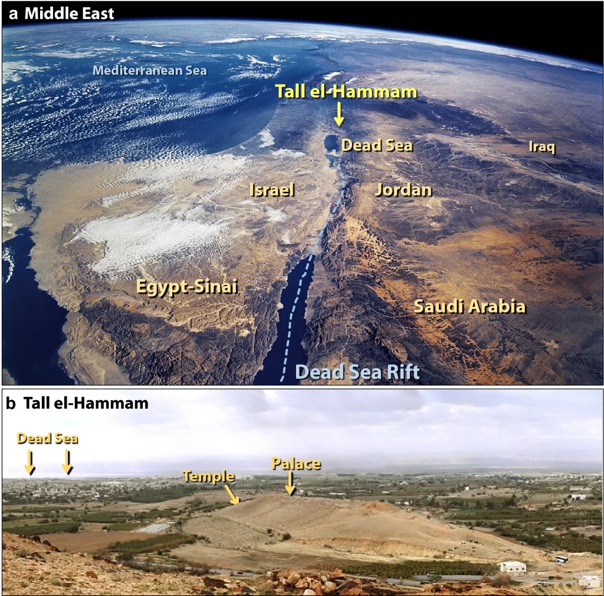
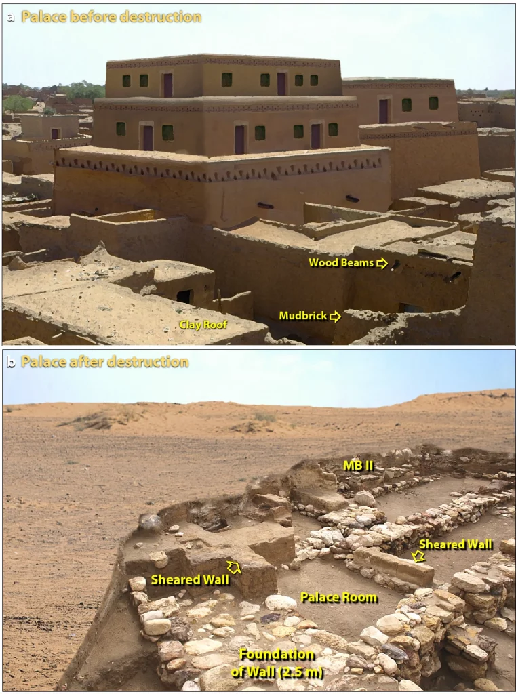

ဒီ သုတေသန အဖွဲ့မှာ ပါဝင်တဲ့ ပညာရှင်တွေဟာ ရှေးဟောင်းသုတေသန ပညာရှင်တွေ ချည်းပဲတော့ မဟုတ်ပါဘူး။ ဒီအဖွဲ့မှာ ရှေးဟောင်း သုတေသန ပညာရှင် တွေနဲ့အတူ ဘူမိဗေဒ ပညာရှင်တွေ၊ ဘူမိဓါတုဗေဒ ပညာရှင်တွေ၊ ရှေးဟောင်း ရုက္ခဗေဒ ပညရှင်တွေနဲ့ အခြား ပညာရှင်တွေ ပါဝင်ပါတယ်။
ပင်လယ်သေ (Dead Sea) ကနေ ၁၅ မိုင်ပဲ ဝေးတဲ့ ဒီမြို့ကြီး ဘာကြောင့် ပျက်စီးရတာလဲသိရအောင် ပညာရှင်တွေဟာ မြေကြီး အနက် ၅ ပေအထိ တူးဖော်ကြည့်ခဲ့ ကြပါတယ်။ ဒီလို တူးဖော်ကြည့်တဲ့အခါ ဆိုးဆိုးရွားရွား မီးလောင် ပျက်စီးနေတာကို တွေ့ကြရပါတယ်။ ပဏာမ တွေ့ရှိချက်တွေအရ ဒီမြို့ပျက်ရတာဟာ ပြင်းထန်တဲ့ မီးလောင်မှုကြောင့်လို့ ဆုံးဖြတ်နိုင်ခဲ့ပေမယ့် ဘယ်လို မီးမျိုးလဲ ဆိုတာကိုတော့ တွေးဆလို့ မရခဲ့ကြပါဘူး။

ဥက္ကာပျံကြောင့်လား
ဒီမြေသား နမူနာတွေကို အသေးစိတ် ခွဲခြမ်းစိတ်ဖြာ အပြီးမှာတော့ ပညာရှင်တွေဟာ ရှာဖွေနေခဲ့တဲ့ အဖြေကို ရရှိလိုက်ပါတယ်။ အခြားသော သဘာဝ ဘေးအန္တရာယ်တွေနဲ့ လူလုပ် ဘေးအန္တရာယ်တွေကို မဖြစ်နိုင်ဘူးလို့ ဆုံးဖြတ်ချက် ချလိုက်ပြီးတဲ့နောက် နောက်ဆုံးမှာတော့ ပညာရှင်တွေဟာ ဒီမြို့ပျက်ရတာ ကောင်းကင်က ကျလာတဲ့ ဥက္ကာပျံကြောင့်လို့ ကောက်ချက်ချလိုက် ကြပါတယ်။ သူတို့ရဲ့ လေ့လာမှုအရ အခြားအကြောင်း တွေကြောင့်ဆို ဒီလောက်ထိ ကြီးမားကျယ်ပြန့်တဲ့ ပျက်စီးဆုံးရှုံးမှုမျိုးကို ဖြစ်စေနိုင်မှာ မဟုတ်ဘူးလို့ ဆိုပါတယ်။သိပ္ပံပညာရှင်တွေက ဒီမြို့ကြီး ဥက္ကာပျံကြောင့် မီးသင့်ပျက်စီးရတဲ့ ဖြစ်ရပ်ဟာ ရှေးကမ္ဘာ့သမိုင်း ပုံပြင်တွေထဲက မီးကြောင့်ပျက်စီး ခဲ့ရတဲ့ မြို့ကြီးတစ်မြို့ရဲ့ ဇါတ်လမ်း ဖြစ်လာဖို့ အခြေခံတွေ ဖြစ်လေမလားလို့လဲ တွေးဆကြပါတယ်။
“တောလ်အယ်လ် ဟမ္မမ် မြို့ကြီး ကောင်းကင်က ကျလာတဲ့ မီးကြောင့် လောင်ကျွမ်းပျက်စီးရတဲ့ ထူးခြားတဲ့ ဖြစ်ရပ်ကို မျိုးဆက်ပေါင်းများစွာ ပါးစပ်ရာဇဝင်အနေနဲ့ ပြောနေခဲ့ကြမှာပါ။ ဒီပါးစပ်ရာဇဝင်တွေကနေပြီး သမ္မာကျမ်းစာလာ မီးကြောင့်ပျက်ရတဲ့ ဆိုဒုမ် (City of Sodom) မြို့ကြီးရဲ့ ရာဇဝင် ဖြစ်လာတာ မဟုတ်ဘူးလို့ ပြောလို့မရပါဘူး” လို့ ဒီပညာရှင်တွေက သူတို့တင်ပြတဲ့ စာတမ်းရဲ့ အဖွင့်မှာ ရေးသားထားပါတယ်။ ဒီစာတမ်းကို ဒီလထုတ် Scientific Reports သုတေသန ဂျာနယ်မှာ တင်ပြထားတာပါ။
မူရင်း သုတေသန စာတမ်းကို ဒီမှာ ဖတ်ရှုနိုင်ပါတယ်။
“သမ္မာကျမ်းစာမှာ ဖေါ်ပြထားတဲ့ ပင်လယ်သေနားက လူနေထူထပ်တဲ့ မြို့ကြီးတမြို့ ကောင်းကင်မီးကြောင့် ပျက်စီးရတာကို ဖော်ပြထားချက်ဟာ ဥက္ကာပျံ လေထုထဲမှာ ပေါက်ကွဲထွက်သွားတဲ့အခါ ဖြစ်ပေါ်လာတဲပျက်စီးမှုတွေကို မြင်တွေ့ခဲ့ရတဲ့ သူတွေရဲ့ ရေးသားခဲ့တဲ့ ရေးသားချက်တွေနဲ့ ထပ်တူနီးပါး တူနေပါတယ်” လို့ သူတို့က ဆက်ဖော်ပြကြပါတယ်။ “ကောင်းကင်ကနေ ကျောက်တုံးကျောက်ခဲတွေ ကျလာမယ်၊ ကောင်းကင်မီးတွေ ကျလာမယ်၊ မီးတွေလောင်ပြီး မီးခိုးတွေ ပိန်းပိတ်နေအောင် ထွက်လာမယ်၊ ဒါတွေကြောင့် လူနေထူထပ်ပြီး အရေးပါတဲ့ မြို့ကြီး တမြို့ လုံးဝ ပျက်စီးသွားမယ်။ မြို့နေလူထု အများစု အသက်ဆုံးရှုံရမယ်။ စိုက်ပျိုးသီးနှံတွေ အပင်တွေ အကုန်လုံး မီးသင့်လောင်ကျွမ်း ပျက်စီး ဆုံးရှံးသွားမယ်” လို့ သူတို့က ဆက်ပြောပါတယ်။

ကောင်းကင်ကကျလာတဲ့လောင်မီး
သိပ္ပံပညာရှင်တွေရဲ့ တွက်ချက်မှုတွေအရ ဒီ ဥက္ကာခဲကြီးဟာ အချင်း ပေ ၂၀၀ လောက် ရှိမယ်လို့ ယူဆကြပါတယ်။ ကမ္ဘာ့ လေထုထဲကို ဝင်ရောက်လာချိန်မှာ တစ်နာရီ မိုင် ၃၈,၀၀၀ နှုန်းနဲ့ ဝင်ရောက်လာခဲ့ပါတယ်။ ကမ္ဘာမြေပေါ်ကို တိုက်ရိုက်ထိမှန်ခြင်း မရှိပဲ မြေမျက်နှာပြင်အထက် အမြင့် ၂ မိုင်ခွဲ (၄ ကီလိုမီတာ) အမြင့်မှာ ပေါက်ကွဲထွက်သွားပါတယ်။ ဒီပေါက်ကွဲမှုကြောင့် ထွက်ပေါ်လာတဲ့ အားဟာ ဟီရိုရှိးမားကို ကျဲချခဲ့တဲ့ အဏုမြူဗုံးထက် အဆ ၁,၀၀၀ လောက် အားပြင်းပါတယ်။မူလ ပေါက်ကွဲမှုကြောင့် ပတ်ဝန်းကျင် လေထုရဲ့ အပူချိန်ဟာ ရုတ်တရက် ဒီဂရီ စင်တီဂရိတ် ၂,၀၀၀ လောက်ထိ မြင့်တက်သွားမယ်လို့ တွက်ဆကြပါတယ်။ သူ့အောက်မှာ ရှိတဲ့ မြို့ထဲက မီးလောင်လွယ်တဲ့ အရာမှန်သမျှဟာ ဒီပူပြင်းတဲ့ အပူဒါဏ်ကြောင့် ချက်ချင်း မီးလောင်ကျွမ်းသွားပါတယ်။ အပူချိန်ဟာ ပြင်းထန်လွန်းလို့ သတ္တုတွေ၊ အုတ်ခဲတွေနဲ့ အိုးခွက်တွေတောင်မှ အရည်ပျော်ကုန်ပါတယ်။
စက္ကန့်အနည်းငယ် အကြာမှာတော့ ပေါက်ကွဲမှုကြောင့် ဖြစ်ပေါ်လာတဲ့ လှိုင်း (Shock Wave) တွေဟာ မြို့ကို ရောက်ရှိရိုက်ခတ် လာပါတယ်။ ဒီ လှိုင်းကြောင့် တစ်နာရီ မိုင် ၇၄၀ လောက်ထိ ရှိတဲ့ ပြင်းထန်တဲ့ လေပြင်ကျရောက်ပြီး မြို့ရှိ အဆောက်အဦတွေ အားလုံး ပြားပြားဝပ်ကုန်ပါတယ်။ မြို့မှာ မှီတင်းနေထိုင်ကြတဲ့ လူ ၈,၀၀၀ ကျော်ဟာ စက္ကန့်အနည်းငယ် အချိန်အတွင်းမှာ အသက် သေဆုံးကုန်မယ်လို့ ယူဆရပါတယ်။
သိပ္ပံပညာရှင် တွေရဲ့ အဆိုအရ ဒီပေါက်ကွဲမှုက ထွက်လာတဲ့ Shock wave လှိုင်းဟာ ပြင်းထန်လွန်းလို့ အနီးပါတ်ဝန်းကျင်မှာ ရှိတဲ့ ပင်လယ်သေထဲက ရေအချို့ကိုတောင် လေထုထဲကို ရေမှုန်တွေ အနေနဲ့ ပျံတက်သွားစေတယ်လို့ ဆိုပါတယ်။ ဒီ ဆားပါတဲ့ ရေမှုန်တွေဟာ နာရီနည်းငယ် အတွင်းမှာ အနီးတဝိုက်ကို ပျံနှံ့သွားပြီး မြေပေါ်ကို ပြန်ကျလာပါတယ်။ ဒီဆားရေ ပျံ့နှံ့ကျရောက်တဲ့ နေရာတွေက လယ်ယာမြေတွေဟာ ဆားဝင်ပြီး ဘာမှ စိုက်ပျိုးမရ ဖြစ်ကုန်ပါတယ်။ ဒါ့ကြောင့်လဲ ဒီ အရပ်ဒေသမှာ နောက်ထပ် နှစ်ပေါင်း ၆၀၀ လောက် လူတွေ ပြန်လည် အခြေချ နေထိုင်ခြင်း မရှိတော့တာလို့ ပညာရှင်တွေက မှန်းဆကြပါတယ်။
ဥက္ကာပျံကြောင့်မြို့ပျက်တယ်ဆိုတာဘယ်လိုအထောက်အထားတွေရှိလဲ
ပုံမှန် ဆိုရင် သိပ္ပံပညာရှင်တွေဟာ သီအိုရီတစ်ခုရဖို့ ပထမဆုံး အထောက်အထား အချက်အလက် အမြောက်အများကို ရှာဖွေရပါတယ်။ ပြီးမှ ဒီရရှိလာတဲ့ အထောက်အထားတွေကို ရှင်းလင်းချက် ပေးနိုင်မယ့် သီအိုရီကို ဖော်ထုတ်ရပါတယ်။အခု ဒီ တောလ်အယ်လ် ဟမ္မမ် မြို့ပျက်ကို လေ့လာခဲ့တဲ့ သိပ္ပံ ပညာရှင်တွေကတော့ အခုသီအိုရီ ဖော်ထုတ်ရာမှာ ဒီလုပ်နေကျ နည်းစနစ်နဲ့ ဆန့်ကျင်ဖက် နည်းစနစ်ကို အသုံးပြုခဲ့ ကြပါတယ်။ ဒါကတော့ သူတို့ဟာ အရင်ဆုံး “ဥက္ကာပျံကြောင့် မြို့ပျက်တယ်” ဆိုတဲ့ သီအိုရီကို အရင် ဖော်ထုတ်ပြီးမှ ဒီအရပ် ဒေသမှာ သူတို့ရဲ့ ဥက္ကာပျံ သီအိုရီကို အထောက်အကူ ပြုမယ့် အထောက်အထား အချက်အလက်တွေကို ရှာဖွေစုဆောင်းတာပဲ ဖြစ်ပါတယ်။
ဒီလို ပုံမှန် လုပ်ရိုးလုပ်စဉ် နည်းလမ်းကို အကျင့်သုံးပေမယ့်လဲ သုတေသီတွေဟာ သူတို့ရဲ့ ဥက္ကာပျံ သီအိုရီ မထုတ်ဖေါ်ခင် အခြား ဖြစ်နိုင်ခြေတွေအားလုံးကို အရင် လေ့လာခဲ့ကြပါသေးတယ်။ ဒီမြို့ပျက်ရဲ့ ပျက်စီးဆုံးရှုံးမှု ပမာဏကို ကြည့်ပြီး ဒါဟာ စစ်ပွဲတို့၊ ငလျှင်လှုပ်တာတို့၊ ရေလွှမ်းမိုးတာ၊ မီးတောင်ပေါက်ကွဲတာ အစရှိတဲ့ ဖြစ်ရိုးဖြစ်စဉ် သဘာဝ ဘေးဆိုးတွေကြောင့် ပျက်စီးတာ မဟုတ်ဘူး ဆိုတာကို သုံးသပ်မိ ကြပါတယ်။
သူတို့ ယူဆတဲ့ အာကာသက ရောက်လာတဲ့ အရာဝတ္ထုကြောင့် မြို့ပျက်စီးတယ် ဆိုတဲ့ အယူအဆ ကို ပိုပြီး လေးလေးနက်နက် လေ့လာဖို့ သုတေသီတွေဟာ Online Impact Calculator ဆိုတဲ့ online tool ကို အသုံးချခဲ့ ကြပါတယ်။ (စိတ်ဝင်စားရင် အပေါ်က လင့်မှာ ဝင်ကြည့်ပြီး ကလိကြည့်လို့ ရပါတယ် ခင်ဗျာ)
ဒီ Online Impact Calculator ကို ဗြိတိန်က Imperial College of London နဲ့ Perdue University တွေက သိပ္ပံပညာရှင်တွေက ရေးသားထားတာ ဖြစ်ပါတယ်။ ဒီ ပရိုဂရမ်ကို အသုံးချပြီး အာကာသထဲက ဝင်ရောက်လာမယ့် ဥက္ကာပျံတွေနဲ့ ကြယ်တံခွန်တွေ ကမ္ဘာ့လေထုထဲ ဝင်ရောက်လာဝင် ဘယ်လို အကျိုးသက်ရောက်မှုတွေ ဖြစ်မလဲ ဆိုတာ တွက်ချက်လို့ ရပါတယ်။
တော်လ်အယ်လ် ဟမ္မမ်မှာ တွေ့ရတဲ့ ထိခိုက်ပျက်စီး မှုတွေဟာ လေထဲမှာ ပေါက်ကွဲသွားတဲ့ ဥက္ကာပျံတွေကြောင့် ပျက်စီးရမှုတွေနဲ့ တူညီနေပါတယ်။
ဒီသီအိုရီဟာ သင်္ချာနည်းနဲ့ တွက်ချက်မှုအရဆို သဘာဝ ကျပေမယ့် တကယ်တမ်း ဟုတ်မှန်ကြောင်း ပြသဖို့ကတော့ မြေပြင်မှာ အသေးစိတ် စစ်ဆေးပြီး အထောက်အထားတွေ ရှာဖွေဖို့ လိုအပ်နေပါတယ်။ ဒါ့ကြောင့် အထောက်အထားတွေ ရှာဖွေဖို့အတွက် သိပ္ပံပညာရှင်တွေဟာ ဒီမြို့ပျက်ကြီးကို အသေးစိတ် တူးဖော်မှုတွေ ပြုလုပ်ပြီး မြေသားနဲ့ ကျောက်သား နမူနာတွေကို ဓါတ်ခွဲစစ်ဆေးနိုင်ဖို့ စုဆောင်းရှာဖွေကြပါတယ်။
လက်တွေ့ မြေပြင်မှာ သူတို့ ရှာဖွေတွေ့ရှိတာတွေက သူတို့ရဲ့ သီအိုရီနဲ့ ကိုက်ညီမှု ရှိနေတာကို တွေ့ရှိကြရပါတယ်။ ရရှိတဲ့ အချက်တွေကို စုပေါင်းပြီး ခြုံငုံသုံးသပ်လိုက်တဲ့အခါ ဒီ ရှေးဟောင်းမြို့တော်ကြီးဟာ အပူချိန်မြင့်မားပြီး ဖိအားပြင်းထန်တဲ့ ကြီးမားတဲ့ ပေါက်ကွဲမှုကြီး တစ်ခုကြောင့် ပျက်စီးသွားရတယ် ဆိုတာကို တွေ့လာရပါတယ်။
အထောက်အထားများ
မီးလောင်ပြီး အရည်ပျော်ကျနေတဲ့ မြေအိုးတွေနဲ့ မြေအုတ်တွေ တွေ့ရှိရပါတယ်။ ဒီ မြေအိုးနဲ့ မြေအုတ်တွေဟာ အပူချိန် ၁,၅၀၀ စင်တီဂရိတ်လောက်ထိ ပြင်းထန်တဲ့အပူချိန်နဲ့ ကြုံတွေ့ခဲ့ရတာပါ။Shocked quartz လို့ခေါ်တဲ့ သလင်းကျောက် တွေကိုလဲ တွေ့ရပါတယ်။ ဒီ သလင်းကျောက်ဟာ ပြင်းထန်တဲ့ ဖိအားအောက်မှာ သဲကနေ ပြောင်းလဲပြီး ဖြစ်လာတဲ့ ကျောက်ဖြစ်ပါတယ်။ ဒီကျောက်ဖြစ်ဖို့ ဖိအား တစ် စင်တီမီတာ ပတ်လည်ကို ကီလိုဂရမ် ၅၁,၀၀၀ တောင်မှ လိုအပ်ပါတယ်။
Diamondoids ခေါ်တဲ့ စိန်တူ။ ဒီစိန်တူတွေဟာ စိန်အစစ်လို မြေအောက်မှာ ဖြစ်လာတာ မဟုတ်ပဲ ပြင်းထန်တဲ့ ဖိအားနဲ့ အပူချိန်အောက်မှာ သစ်သား အပိုင်းအစ တွေကနေ အငွေ့ပျံပြီး ဖြစ်လာကြတာ ဖြစ်ပါတယ်။
Spherules လို့ခေါ်တဲ့ အမှုန်လေးတွေဟာ သံနဲ့ သဲ အငွေ့ပျံပြီး ပေါင်းစပ်သွားလို့ ဖြစ်လာတာ ဖြစ်ပါတယ်။ ဒီလို ပေါင်းစပ်ဖို့ အပူချိန် စင်တီဂရိတ် ၁၅,၉၀ အနည်းဆုံး လိုအပ်ပါတယ်။
အရည်ပျော်သွားတဲ့ မြေအိုးနဲ့ မြေအုတ်တွေက သတ္တုအပိုင်းအစ လေးတွေနဲ့ ပေါင်းစပ်သွားပြီး ဖြစ်လာတဲ့ ကျောက်တုံးလေးတွေကိုလဲ တွေ့ရပါတယ်။ ဒီသတ္တုတွေ အရည်ပျော်ဖို့ အပူချိန် ၁,၆၀၀ ဒီဂရီ စင်တီဂရိတ်ခန့် လိုအပ်ပါတယ်။
ပုံမှန် မီးနဲ့ မီးတောင်က ထွက်တဲ့ ချော်ရည်ပူတွေတောင်မှ ဒီလောက် ပြင်းထန်တဲ့ အပူချိန်နဲ့ ဖိအားကို ဖြစ်စေဖို့ မတတ်နိုင်ပါဘူး။ အဲ့ဒီခေတ်က အဏုမြူ ပေါက်ကွဲမှု မဖြစ်နိုင်တာကြောင့် ကျန်နေတဲ့ အထဲက ဖြစ်နိုင်တာက ဥက္ကာပျံ ကောင်းကင်မှာ ပေါက်ကွဲသွားတာပဲ ဖြစ်နိုင်ပါတယ်။
လွန်ခဲ့တဲ့ နှစ်ပေါင်း ၁၂,၈၀၀ ခန့်ကလဲ ကမ္ဘာမြေပေါ်ကို အလားတူ ဥက္ကာတုံးကြီး တစ်တုံး ကျရောက်ခဲ့ပါသေးတယ်။ ဒီဥက္ကာတုံးကြီးကတော့ ဆီးရီးယား နိုင်ငံမှာရှိတဲ့ ရှေးဟောင်းရွာလေး တစ်ရွာဖြစ်တဲ့ အဘူဟာရီယာ (Abu Hureyra) ရွာလေးပေါ် ကျရောက်ခဲ့တာပါ။ ဒီဥက္ကာပျံကြောင့် ဒီရွာလေးက တစ်ရွာလုံး ပျက်စီးခဲ့ရပါတယ်။
နှစ်ပေါင် ၆၆ သန်းတုန်းကတော့အချင်း ၆ မိုင်ရှိတဲ့ ဧရာမ ဥက္ကာပျံကြီးဟာ အမေရိကန် ပြည်ထောင်စု နေရာကို လာရောက် ထိမှန်ခဲ့ပါတယ်။ ဒီ ဥက္ကာပျံကြီးကြောင့်လဲ ကမ္ဘာ့ ရာသီဥတုတွေ ဖေါက်ပြန်ပြီး ဒိုင်နိုဆောတွေ မျိုးတုန်းသွားခဲ့ရ ဖူးပါတယ်။.
ဒီလို ဥက္ကာပျံကြီးတွေ ကျရောက်ထိမှန်တာမျိုးနောက်ဘယ်တော့ ထပ်ဖြစ်နိုင်မလဲ ဆိုတဲ့ မေးခွန်းကိုတော့ ပညာရှင်တွေ အနေနဲ့ ခန့်မှန်းနိုင်ကြခြင်း မရှိသေးပါဘူးခင်ဗျာ။
Reference:
Scientists Conclude Cosmic Impact Destroyed Jordanian City | Ancient Origin